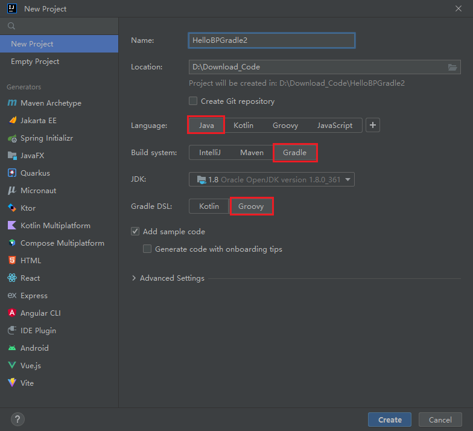
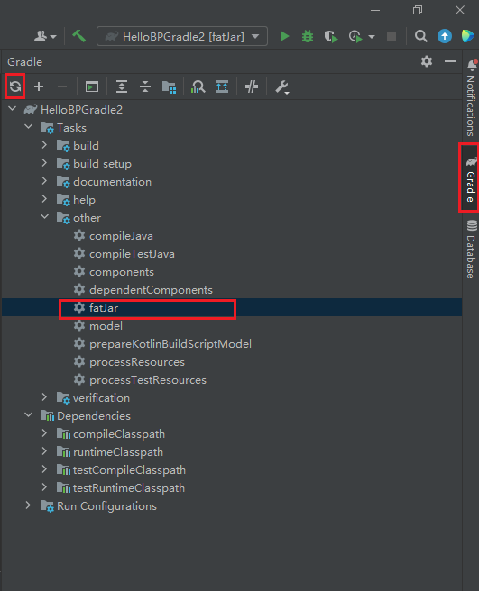
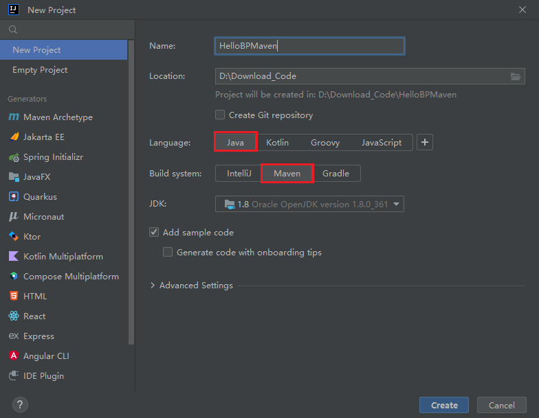
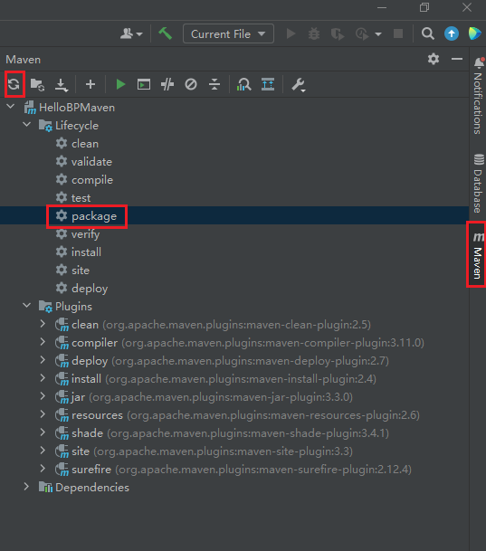
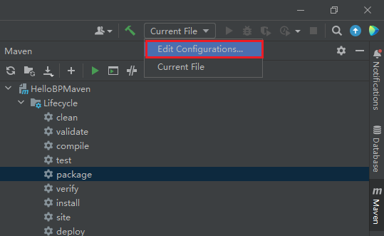

Burpsuite Java插件开发 - 基础篇
BurpSuite插件可以使用Java、Python或Ruby来编写，因为BurpSuite（以下简称为BP或Burp）本身是用Java写的，通常插件的开发也是用Java来编写。如果用Python编写，还要安装Jython，而且在安装一些Python模块时可能会报错，加上目前Jython不支持Python 3，所以用Python写写BP小插件还行，功能多的话还是推荐用Java写。
本文主要内容是使用Java编写BP插件时，如何使用IDEA构建 Gradle 和 Maven 项目，编写一个Hello World插件，与如何调试插件。网上这类文章很多了，我主要补充一些在网上没看到的。
文中用到的BP版本为 Burpsuite Pro v2023.4.5， IDEA版本为2023.1.2。
IDEA + Gradle 开发
使用IDEA新建一个Gradle项目：

Build System选择Gradle，Gradle DSL选择Groovy。
修改build.gradle文件，引入编写BP插件需要的API库：
1 | |
我本机使用的是Gradle 8，如果是低版本的Gradle，由于build.gradle配置文件的语法略有不同，可能需要改一下，主要是fatJar这块要改为：
1 | |
然后implementation 指令改为 compile 。
接着在源码目录（src/main/java/）下新建burp目录，再在burp目录下新建一个BurpExtender类，再复制官方提供的HelloWorld示例 BurpExtender.java 代码过来。
然后点击IDEA右侧的Gradle工具窗口 - 刷新按钮，让Gradle重新加载配置文件，下载依赖库。（如果没看到Gradle工具按钮，就点 View -> Tool Windows -> Gradle 打开）

如果一切OK，再点击运行Tasks - other - fastJar，编译一个jar包出来。 这个jar包在项目根目录下的build/libs 目录。用BurpSuite加载这个Jar，运行你的第一个BP插件吧。
IDEA + Maven 开发
用IDEA新建一个Maven项目

Build System选择Maven。
修改pom.xml文件为：
1 | |
主要是加上了build和dependencies块。dependencies块引入BP插件API库，build块里配置maven-shade-plugin插件在打包时可以将项目的依赖也打入jar包里。
由于打包后的jar包里，META-INF/MANIFEST.MF文件的Built-By字段默认是本地计算机用户名，所以加上对maven-jar-plugin插件的配置，将Built-By字段值覆盖掉，避免信息泄露。
接着在源码目录（src/main/java/）下新建burp目录，再在burp目录下新建一个BurpExtender类，再复制官方提供的HelloWorld示例 BurpExtender.java 代码过来。
然后点击IDEA右侧的Maven工具窗口 - 刷新按钮，让Maven重新加载配置文件，下载依赖库。

如果一切OK，再点击运行Lifecycle - package，编译一个jar包出来。 这个jar包在项目根目录下的target 目录。用BurpSuite加载这个Jar（不是那个以original-开头的jar包），运行你的第一个BP插件吧。
如果修改pom.xml后编译，发现修改不生效，先刷新，再运行Lifecycle - clean，再package打包。
调试插件
简单的调试可以用打印输出。比如在上方用到的Hello World示例中，加上这两句调用BP提供的IBurpExtenderCallbacks接口方法：
1 | |
假如在编写或使用插件时，需频繁查看插件日志，可以保留着加载插件时弹出来的那个日志窗口。
打印调试法毕竟麻烦，还得用断点调试：
打开运行配置：

新建一项Remote JVM Debug的运行配置，可以直接使用默认配置。其默认配置是：
1 | |
运行BP时加上该参数：-agentlib:jdwp=transport=dt_socket,server=y,suspend=n,address=5005。如：
1 | |
IDEA里执行刚添加的Remote JVM Debug配置，并下断点。 BP加载插件，运行到断点处就会断下。
另外建议在终端里执行命令来启动BP，因为有的异常你没捕获的话，异常堆栈会在终端里打印，在BP里的插件日志里是看不到的。
还有一个小tip：按住 Ctrl 或 Command 键并单击插件列表中某个插件的Loaded复选框可以重新加载插件。
MacOS下的BP插件调试
假如下载的是BP Mac版本的app（而不是单独的jar包），其自带OpenJDK。如果想用自带OpenJDK启动调试BP的话，就给 Burp Suite Professional.app里的 vmoptions.txt 文件加上一句：
1 | |
然而加上后，启动BP失败了。执行 /Applications/Burp\ Suite\ Professional.app/Contents/MacOS/JavaApplicationStub，可以看到报错：
1 | |
提示缺少libjdwp.dylib库文件。我的解决方式是：
执行
/Applications/Burp\ Suite\ Professional.app/Contents/Resources/jre.bundle/Contents/Home/bin/java -version，先看下OpenJDK的版本，是openjdk 19.0.2：1
2
3openjdk version "19.0.2" 2023-01-17
OpenJDK Runtime Environment (build 19.0.2+7-44)
OpenJDK 64-Bit Server VM (build 19.0.2+7-44, mixed mode)到 https://www.oracle.com/java/technologies/javase/jdk19-archive-downloads.html 下载一个对应版本的jdk包。（注意自己的CPU架构是x64还是Arm 64）
解压刚下载的jdk包，并将
libjdwp.dylib和libdt_socket.dylib文件拷贝到Burp Suite Professional.app里：1
2
3cp /Users/ovie/Downloads/jdk-19.0.2.jdk/Contents/Home/lib/libjdwp.dylib /Applications/Burp\ Suite\ Professional.app/Contents/Resources/jre.bundle/Contents/Home/lib/server/libjdwp.dylib
cp /Users/ovie/Downloads/jdk-19.0.2.jdk/Contents/Home/lib/libdt_socket.dylib /Applications/Burp\ Suite\ Professional.app/Contents/Resources/jre.bundle/Contents/Home/lib/server/libdt_socket.dylib
附：之前遇到的一个问题，OpenJDK里没有 com.sun.net.httpserver.HttpServer 这个类（在Oracle JDK里，这个类在 rt.jar），如果BP插件里用此类启动http服务，会报 java.lang.NoClassDefFoundError: com/sun/net/httpserver/HttpServer。
本博客所有文章除特别声明外，均采用 CC BY-SA 4.0 协议 ，转载请注明出处！